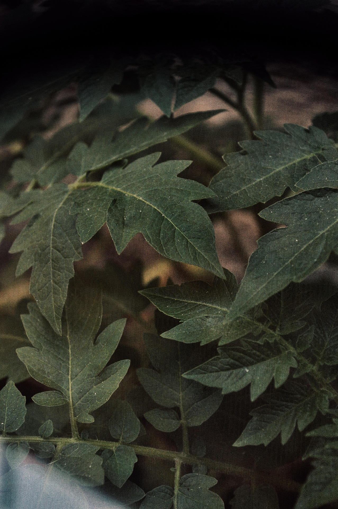
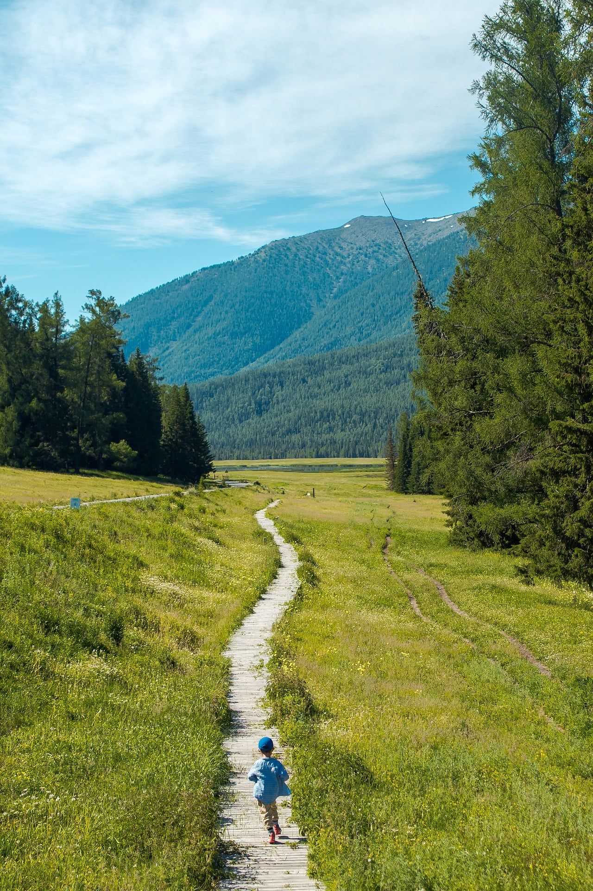
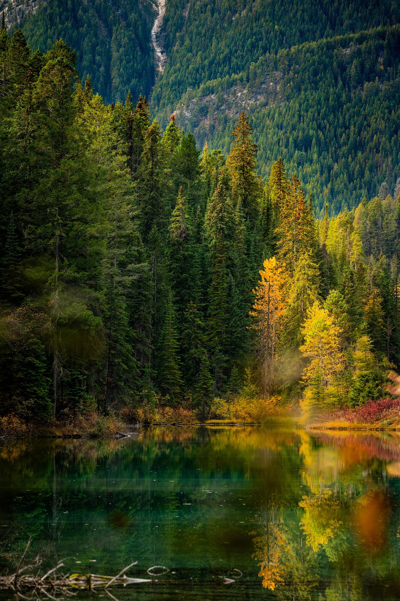

As plantas são seres vivos pluricelulares, eucariontes e autotróficos e fotossintetizantes.
Mais informações.
Há angiospermas, fetos, coníferas, musgos e lycodiophytas
Mais informações
As plantas são fundamentais para a manutenção da vida na Terra.
Mais informações.
| Tipos | Metodos reprodutivos | Portador de semente |
|---|---|---|
| Angiospermas | Reprodução sexuada através de flores e produção de frutos | Sim (Sementes protegidas no interior do fruto) |
| Coníferas | Produção de estruturas reprodutivas chamadas estróbilos ou pinhas | Sim (Sementes nuas, não protegidas por fruto) |
| Fetos | Reprodução através de esporos (produzidos em soros na parte inferior das folhas) | Não (Não produzem sementes) |
| Lycodiophytas | Reprodução através de esporos (produzidos em estruturas semelhantes a cones) | Não (Não produzem sementes) |
| Musgos | Reprodução através de esporos (por alternância de gerações) | Não (Não produzem sementes) |